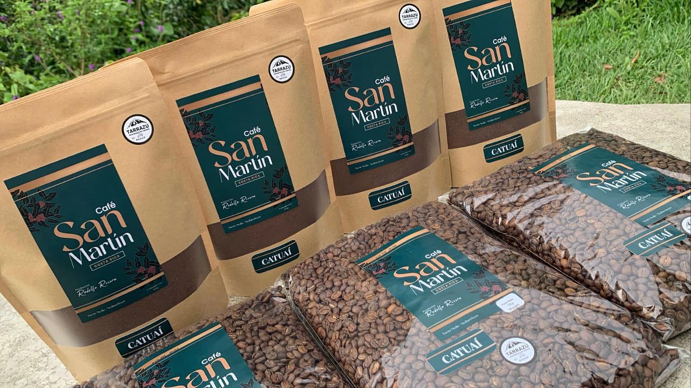
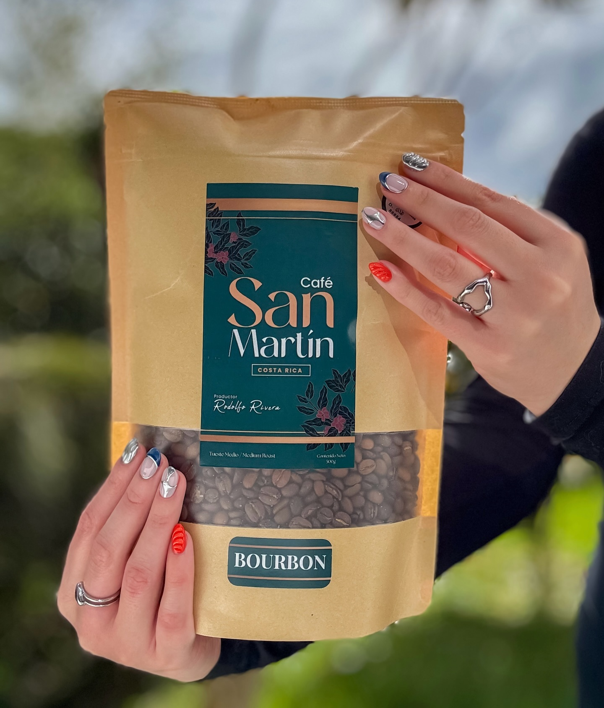
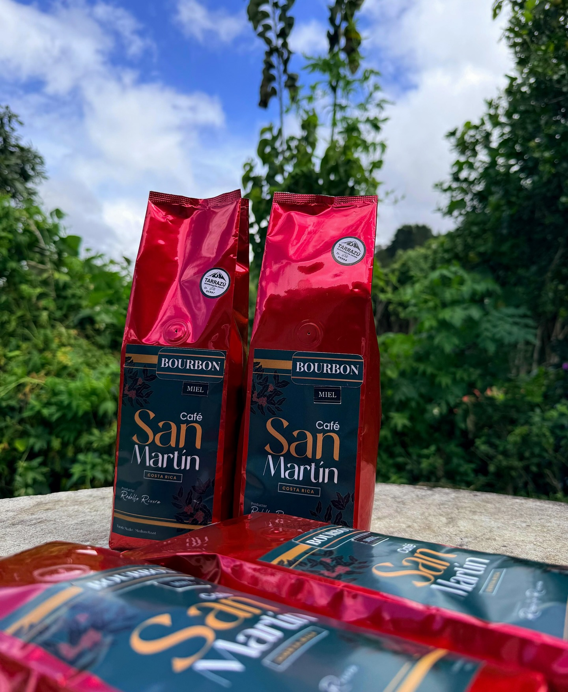
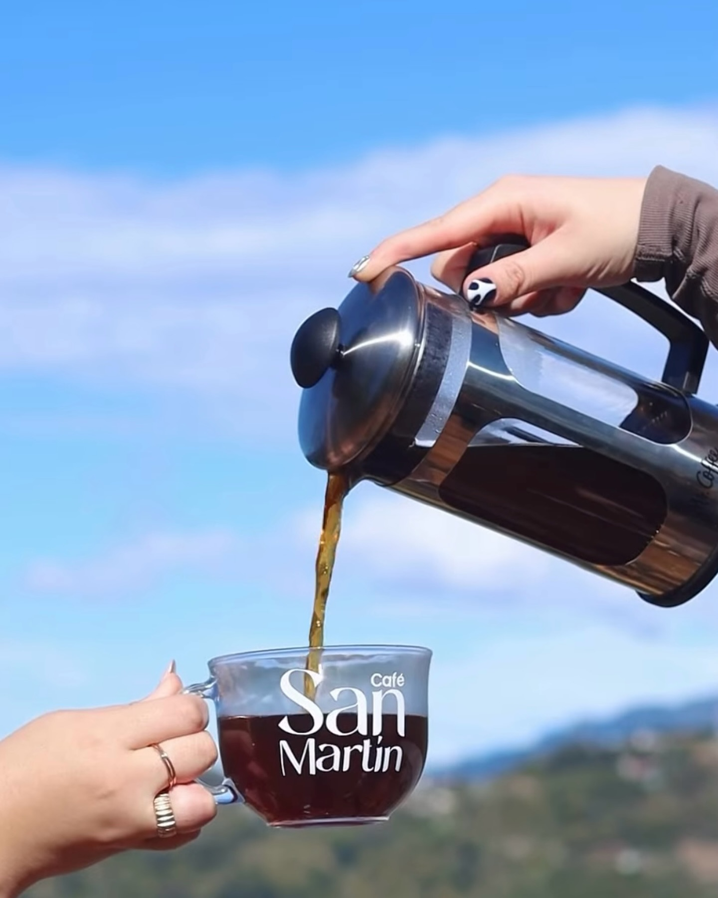
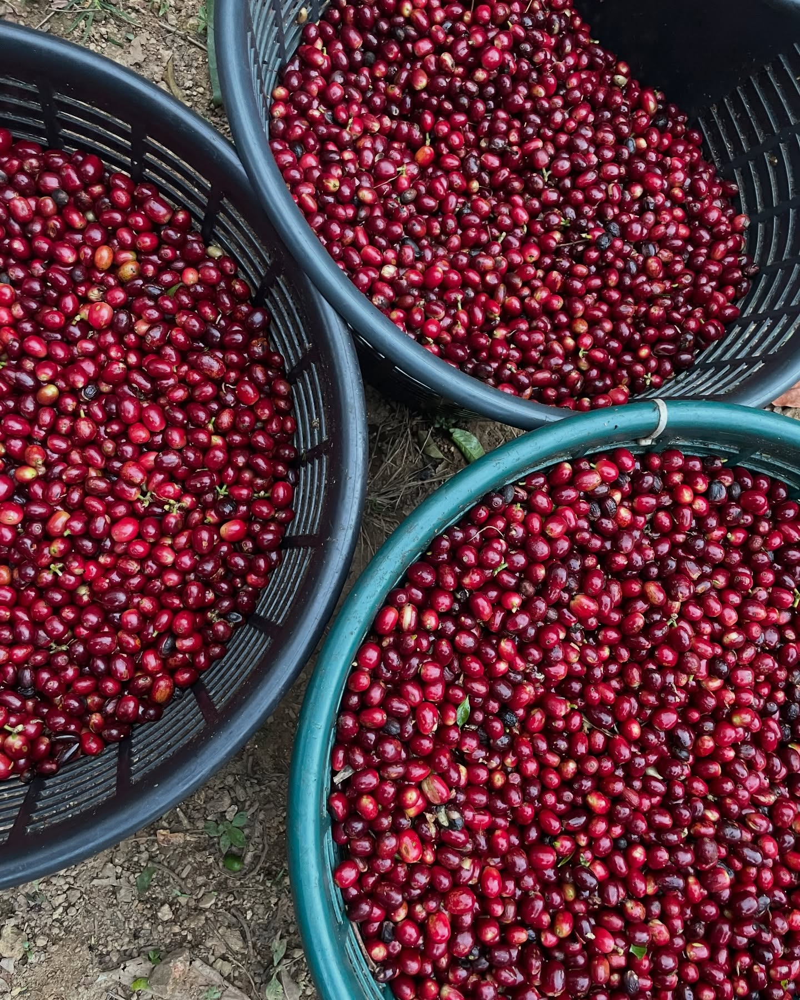

Nuestro Catálogo
Descubre los cafés de altura de Café San Martín, cultivados en Tarrazú, Costa Rica.
Galería de Productos
Filtra por origen o tueste, o usa el buscador para encontrar tu café ideal.

Tarrazú - Medio
Café Catauí 1kg
Notas a caramelo y frutos rojos.
₡7.200

Valle Central - Oscuro
Café Bourbon 500g
Cuerpo intenso, notas achocolatadas.
₡6.200

Los Santos - Claro
Café Geisha 250g
Perfil de especialidad, jazmín y bergamota.
₡9.900
No encontramos cafés con estos filtros. Intenta con otra combinación.
Colecciones de café.
Explora nuestros cafés agrupados por origen y temporada.
Paquetes especiales.
Combos pensados para regalar o abastecer tu oficina.

Paquete Oficina
Café molido 2kg + 100 filtros de papel. Ideal para equipos de trabajo.
₡14.900

Paquete Degustación
Incluye 3 bolsas de 250g: Catuaí, Bourbon y Geisha, para comparar perfiles.
₡8.500